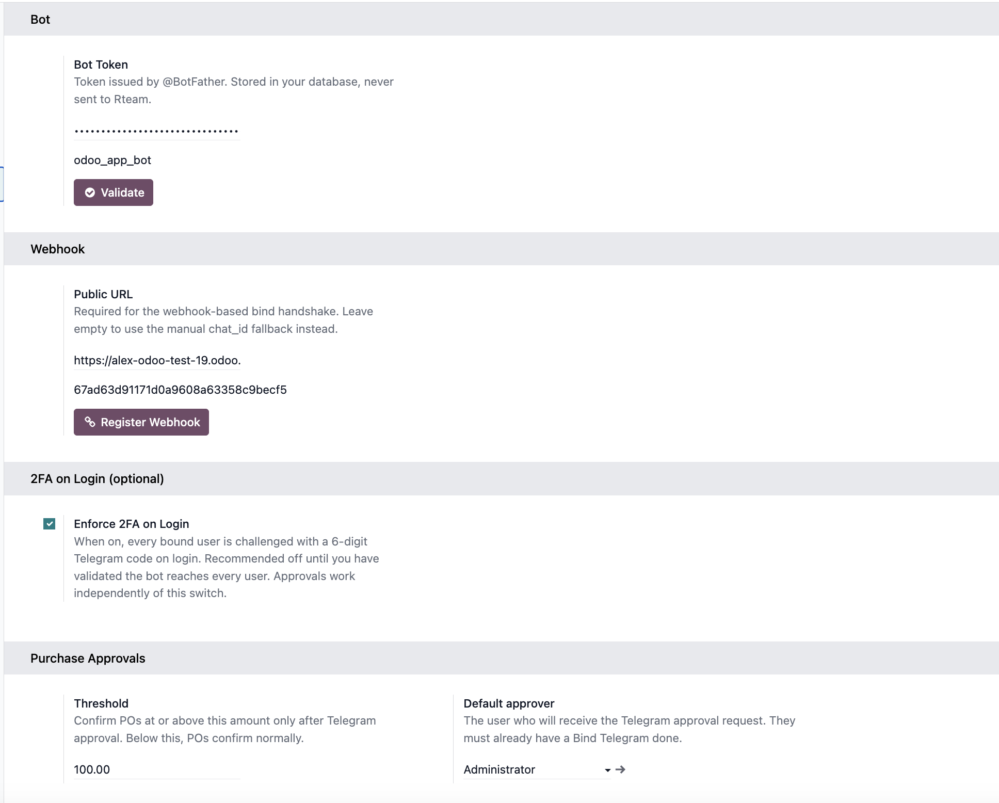
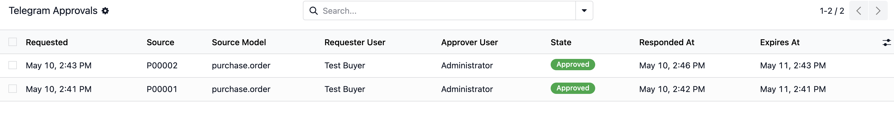
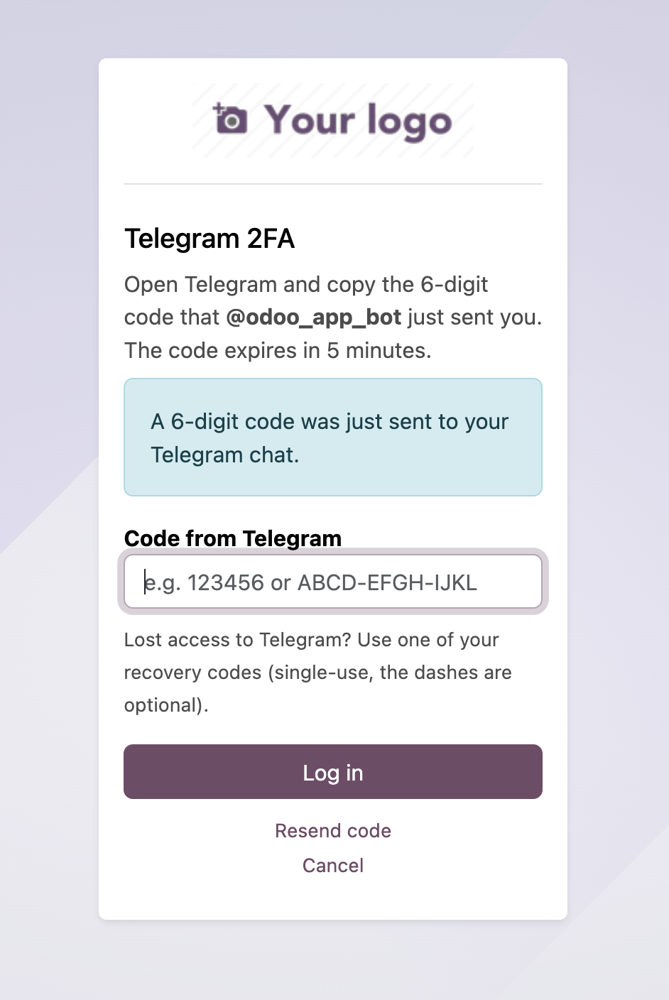

From Odoo to a tap on a phone
The Purchase Order is held the moment it crosses the threshold. Your approver sees an inline-button message; their tap drives the next state of the PO and writes a chatter audit row.

First integration shipped: Purchase Orders. Vendor Bills, Time Off, Expenses next.
When a Purchase Order over your threshold is confirmed, the order is held in draft state and an inline Telegram message goes straight to the approver's phone with three buttons: Approve, Reject, View in Odoo. One tap and the PO confirms in Odoo, the chatter records who approved and when. No VPN, no Odoo login, no inbox dig. The approver is back to their coffee in 4 seconds.
Odoo 19 LGPL-3 Free Bring-your-own-bot No Python deps Community & Enterprise
The Purchase Order is held the moment it crosses the threshold. Your approver sees an inline-button message; their tap drives the next state of the PO and writes a chatter audit row.
Talk to @BotFather in Telegram, type /newbot, give it a name, copy the token.
Settings -> Telegram. Paste the token, click Validate. Then enter your public URL and click Register Webhook.
Each approver opens My Preferences, clicks Bind Telegram, follows the deep link, presses Send. The bot replies "Bound to <login>".
| Channel | Cost per message | Inline action | Push delivery |
|---|---|---|---|
| Telegram | Free | One-tap buttons | Native |
| Free | Click a link | Inbox noise | |
| SMS (Twilio) | ~$0.05 | None | Native |
| WhatsApp Business | ~$0.005-0.05 | Buttons in templates | Native |
Telegram has 800M+ monthly active users in EU, MENA, UA and SEA -- the same regions where most Odoo installs live.
Configure a Threshold and a Default approver in Settings -> Telegram -> Purchase Approvals. POs at or above the threshold are gated through Telegram; smaller POs confirm normally with no approver friction. Self-approve is blocked: requester == approver = no Telegram detour.


Every approval request is a row: source PO, requester, approver, state, summary that was delivered to Telegram, the response time, the deep link back to Odoo. Stale pending requests auto-expire on a 30-minute cron. Audit log captures who tapped what, from which chat, with which Telegram message id.
Same bot, same chat, no extra setup. Flip Enforce 2FA on Login and every bound user is challenged with a 6-digit code on login. 5-minute TTL, rate-limited (5 sends per 15 min). Approvals work independently of this switch.

The bot token lives in your ir.config_parameter, never
in any Rteam-hosted system. The webhook endpoint is guarded by both a
path secret and the X-Telegram-Bot-Api-Secret-Token
header. Each inline button carries HMAC-signed callback
data so an attacker who learns a request id alone cannot
forge a tap. Stdlib urllib only -- no external Python
dependencies, no surprise CVE pull-ins.
The approval ledger is source-agnostic. Your model implements one method:
def on_rteam_tg_approval_resolved(self, request, new_state):
if new_state == "approved":
self.confirm()
elif new_state == "rejected":
self.message_post(body="Rejected via Telegram")
The Telegram side -- buttons, signed callbacks, expiry, audit, "Approved by X" status replacement -- is fully reusable. See github.com/RteamAgency/rteam-tg-auth for the working pattern.
All Rteam modules on apps.odoo.com -- AI Assistant for Odoo, Daily Health Check, Prozorro Connector, FSM Repair Bridge, and more.
Built and maintained by Rteam -- Odoo Enterprise specialists since 2019. Questions? alex@rteam.top.